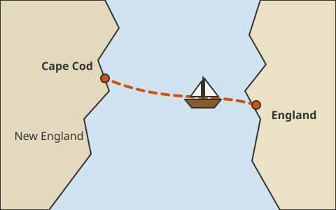
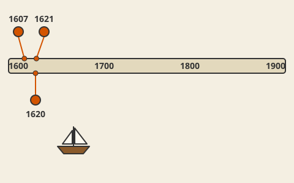

Pilgerväter und Mayflower
Mit einem KI-Tutor lernen
Ein KI-Tutor erklärt dir diese Seite und hilft dir bei den Aufgaben. Wähl deinen Assistenten:
Mit Claude öffnen Mit ChatGPT öffnen Mit Mistral Vibe öffnen
Du nutzt dein eigenes Konto beim Anbieter. Der Assistent ist kein Angebot von lernapps.net: lernapps liefert nur Inhalte und Aufgaben. Die Wahl gilt für alle Seiten, nur auf diesem Gerät.
Ein Schiff mit einem berühmten Namen
Sophie fragt Jayden nach dem Schiff Mayflower. Vorher eine Frage an dich.
Aufgabe
Lösung
Kolumbus und seine Mannschaft
Kolumbus segelte 1492 für Spanien.
Cowboys aus dem Westen
Der Westen wurde erst viel später besiedelt.
Pilger aus England richtige Antwort
Die Pilger wollten eine eigene Kirche.
Die Mayflower brachte Pilger über den Atlantik.
Das kannst du danach: Du erzählst von der Reise der Mayflower und sagst, wer in Nordamerika schon lebte.
Jayden erzählt von der Mayflower
- Sophie: Mr Hill showed us a picture of the Mayflower today. Was that Columbus's ship?
- Jayden: No! Columbus sailed for Spain in 1492. The Mayflower sailed from England in 1620.
- Sophie: Who was on it?
- Jayden: The Pilgrims. They were English people who wanted their own church, but in England that was against the law. So they moved to the Netherlands first.
- Sophie: Why did they leave the Netherlands?
- Jayden: They worried about money, and their children spoke more and more Dutch. They wanted to stay English.
- Jayden: In September 1620, one hundred and two passengers left England on the Mayflower and crossed the Atlantic Ocean. After about sixty-five days they saw land at Cape Cod.
- Jayden: They started the Plymouth Colony in what is now Massachusetts. Nearly half of the Pilgrims died in the first winter.
- Sophie: Were the Pilgrims the first people in North America?
- Jayden: No way. People from Europe came, but Native Americans lived in North America for thousands of years. The Wampanoag lived near Plymouth. Patuxet was empty after a plague.
- Jayden: In March 1621 the Pilgrims and Massasoit, a leader of the Wampanoag, signed a peace treaty. A man called Squanto, from Patuxet, helped the Pilgrims. An English captain once took him to Europe by force. In England he learned the language.
- Sophie: Was Plymouth the first British colony?
- Jayden: No. The Virginia colony began in 1607. In the end, there were thirteen colonies.
| Englisch | Deutsch |
|---|---|
| the Pilgrims | die Pilger (Engländer, die mit der Mayflower segelten) |
| the colony | die Kolonie (Gebiet, das zu einem anderen Land gehört) |
| the church | die Kirche |
| against the law | verboten |
| the Netherlands | die Niederlande |
| Dutch | niederländisch |
| to worry about | sich Sorgen machen um |
| the passenger | der Passagier |
| the Wampanoag | die Wampanoag (ein Volk der Native Americans in Massachusetts) |
| Native Americans | die Native Americans (Menschen, deren Vorfahren schon lange vor den Europäern in Nordamerika lebten) |
| the leader | der Anführer |
| the treaty | der Vertrag |
| the village | das Dorf |
| the plague | die Seuche (eine Krankheit, an der viele Menschen sterben) |
| by force | mit Gewalt, gegen den Willen |
Verstehen, belegen, meinen
Aufgabe
Lösung
Richtige Antwort: Die Aussage stimmt nicht.
Native Americans lebten dort seit vielen Tausend Jahren. Die Pilger kamen 1620 aus Europa.
Aufgabe
Lösung
Zeile 4
Zeile 4 handelt von der Kirche.
Zeile 8
Zeile 8 handelt vom ersten Winter.
Zeile 13
Zeile 13 handelt von der Virginia Colony.
Zeile 6 richtige Antwort
Hier geht es um Geld.
Zeile 6: Geldsorgen waren ein Grund, die Niederlande zu verlassen.
Offene Aufgabe
Die Mayflower kommt in Nordamerika an: Wer gewinnt, wer verliert? Schreibe zwei bis drei Sätze auf Englisch über die Pilger und die Wampanoag, zum Beispiel mit „The Pilgrims got … but …“.
Tipp
Schau in die Zeilen 8, 10 und 11.
Eine gute Antwort enthält:
- Du nennst, was die Pilger wollten oder bekamen, zum Beispiel eine eigene Kirche oder einen Platz zum Leben. Nachlesen
- Du nennst die Sicht der Wampanoag oder der Native Americans, zum Beispiel dass sie schon dort lebten, dass das Dorf Patuxet leer war oder dass sie 1621 einen Vertrag schlossen. Nachlesen
- Es sind ganze Sätze mit Punkt am Ende. (Form)
Lösung
The Pilgrims got a place for their own church, but nearly half of them died in the first winter. The Wampanoag already lived there, and a plague had emptied the village of Patuxet before the Pilgrims came. Now people from Europe came to their land, but in 1621 both sides signed a peace treaty.
Die Reise auf der Karte

© CC-BY-4.0Schemakarte, nicht genau nach Maßstab. Norden ist oben. Die gestrichelte Linie zeigt den Weg der Mayflower.

© CC-BY-4.0Die Zeitachse der USA beginnt. Mit jedem Halt kommen neue Punkte dazu: graue Punkte sind schon bekannt, orange Punkte sind neu.
Merke
Die Pilgrims kamen 1620 auf der Mayflower und gründeten die Plymouth Colony. Eine colony gehört zu einem anderen Land, damals zu Großbritannien. Native Americans lebten schon lange dort und leben bis heute in den USA.
Übung
Aufgabe
Lösung
Richtige Antwort: 1 – North America; 2 – Europe; 3 – Atlantic Ocean; 4 – the Mayflower
Die Mayflower fuhr von Europa über den Atlantik nach Nordamerika.
Aufgabe
Lösung
Richtige Antwort: 1. Die Pilger ziehen in die Niederlande., 2. Die Mayflower fährt aus England ab., 3. Die Pilger sehen Land und gründen die Plymouth Colony., 4. Fast die Hälfte der Pilger stirbt im ersten Winter., 5. Die Pilger und Massasoit unterschreiben einen Friedensvertrag.
Zuerst die Niederlande, dann die Überfahrt, dann die Kolonie, der Winter und im März 1621 der Vertrag.
Aufgabe
Ergänze das Verb in der Vergangenheit.
Tipp
Regelmäßige Verben bekommen in der Vergangenheit -ed.
- Die Pilger fuhren mit der Mayflower. → The Pilgrims … on the Mayflower.
- Die Wampanoag lebten in Nordamerika. → The Wampanoag … in North America.
- Die Pilger gründeten die Kolonie. → The Pilgrims … the colony.
Lösung
- The Pilgrims sailed on the Mayflower.
- The Wampanoag lived in North America.
- The Pilgrims started the colony.
Aufgabe
Hör zu und schreibe, was du hörst.
Tipp
Hör jeden Satz zweimal.
- KI
- KI
- KI
Lösung
- Many Pilgrims became ill in the winter.
- The Wampanoag lived there long before the Pilgrims.
- The Pilgrims lived in a Dutch city.
Selbst sprechen
Aufgabe
Hör zu, sprich nach und nimm dich auf. Vergleiche dann mit dem Original.
Tipp
Sprich langsam nach. Achte auf Atlantic, Squanto und Massachusetts.
- The Mayflower sailed across the Atlantic Ocean.KI
- Squanto learned to speak English in England.KI
- Massachusetts is in the north-east of the country.KI
Zum Aufnehmen braucht diese Aufgabe JavaScript. Die Beispiele kannst du auch ohne anhören.
Lösung
- The Mayflower sailed across the Atlantic Ocean.
- Squanto learned to speak English in England.
- Massachusetts is in the north-east of the country.
Nächster Halt
Nach den Pilgern kamen noch viele Millionen Menschen aus Europa. Auf der Zeitachse geht es von 1620 nach 1892. Die Weltkarte zeigt jetzt ein Schiff vor New York: Dort liegt Ellis Island.
Fehler gefunden oder eine Idee für diese App?